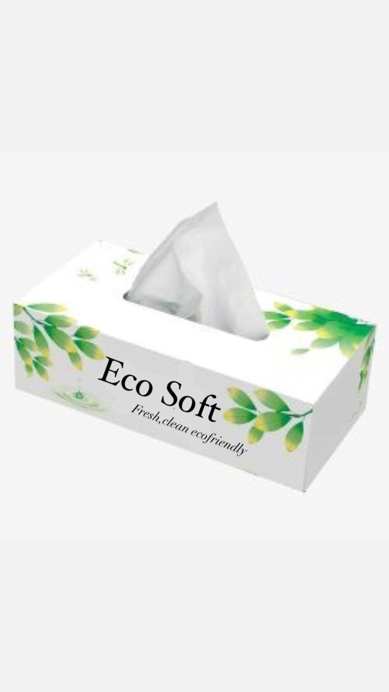
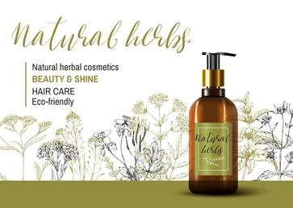

| HOME | ABOUT | PRODUCTS | CONTACT |
|---|
Neem tree (Azadirachta Indica) has proven medicinal properties that prevent fungal growth and can reduce dandruff. This wide tooth comb has rounded tips designed to give your scalp a gentle massage, aiding in normalizing oil production and stimulating hair growth.
1.An antibacterial clearing up skin irritations and acne.
2.Full of antioxidants.
3.Suitable for all skin types.
4.Keeps the skin moisturized.
Ingredients :- Saponified Neem Oil, Fresh Basil Extract, Coconut Oil, Castor Oil, Unrefined Sal Butter, Mahua Oil, Distilled Water. Net Wgt :- 150 gms
1.Relieves Skin Irritation And Itching.
2.Exfoliates The Skin Naturally.
3.Acne Treatment.
4.Moisturizes Your Skin.
Ingredients :- Saponified Oatmeal, Raw honey, Goat milk, Jojoba oil, Coconut Oil, Castor Oil, Argan Oil, Distilled Water. Net Wgt :- 150 gms
1.Brightens the skin.
2.Prevents breakouts and skin rash.
3.Moisturizes and nourishes the skin.
4.Antibacterial properties.
Ingredients :- Saponified Lemon oil, Lemon extract, Olive oil, Sunflower oil, Castor oil, Soya Bean oil, Cocoa Butter, Coconut Oil Honey, Bergamot Essential oil. Net Wgt :- 150 gms

1.Aloevera, rich in antioxidants.
2.Helps to heal our skin naturally.
3.Cucumber works as an astringent to soothe and soften skin.
4.Prevents wrinkles.
Ingredients :- Olive oil, Coconut oil, Saponified Cucumber juice, Aloe vera juice, Castor oil, Canola oil, Shea butter, Cocoa butter, Argan oil, Distilled water, Citrate, Sea salt, Distilled water. Net Wgt :- 150 gms
1.Stress relief.
2.Antibacterial and antiseptic.
3.Treat acne ,eczema and skin inflammation.
4.Helps to improve sleep.
Ingredients :- Distilled Water, Glycerin, Aloevera Extract, Rosemary oil, Lavender Oil, Shea butter, Cocoa butter. Net Wgt :- 150 gms
1.Skin Exfoliation and Softening.
2.Cellulite Reduction.
3.Treating Dark Circles and Puffy Eyes.
4.Anti-Oxidation and Anti-Inflammation.
5.Skin Tightening and Brightening.
Ingredients :- Olive oil, Coconut oil, Saponified coffee concentrate, Shea butter, Cocoa butter, Argan oil, Distilled water, Sea salt, Distilled water. Net Wgt :- 150 gms
1.Perfect blend of ayurvedic and natural properties.
2.Strengthen hair from root to tip.
3.Better circulation in the scalp.
4.Paraben and sulphate free.
Ingredients :- Indian Gooseberry extract, Senegalia rugata, Fenugreek seeds, Hibiscus flower/leaves, False daisy, Indian soapberry, Henna extract, Castile vegetable oil, Glycerin. Net Wgt :- 340 ml